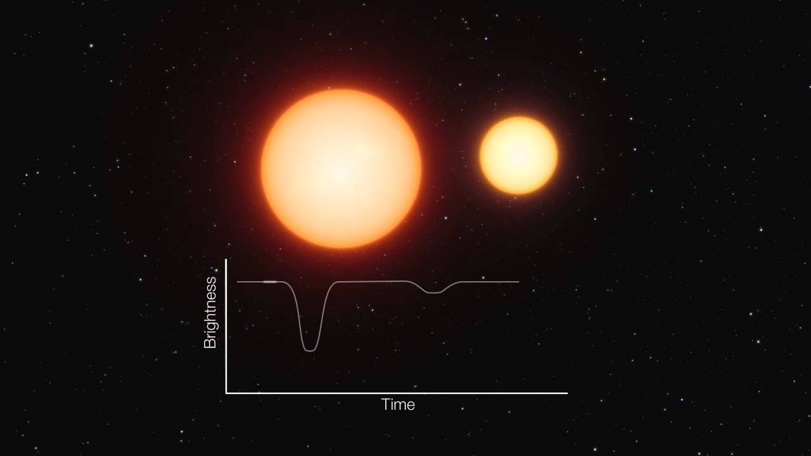
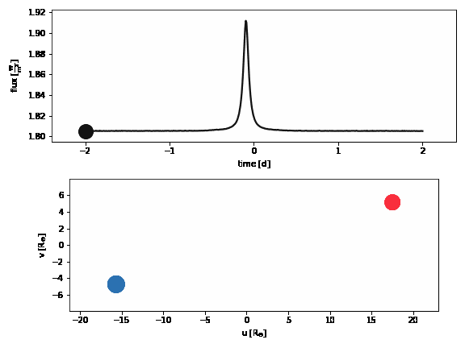
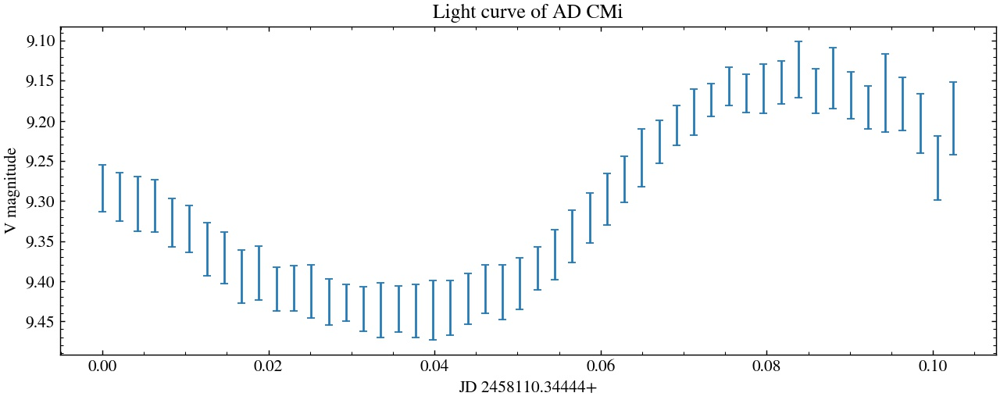

Projects
Detached Eclipsing Binaries as Benchmark Stars for the PLATO LOPS2 Mission
Ongoing
Funded by the National Science Center (NCN) – Preludium, Poland Grant No. NCN 2024/53/N/ST9/03885.
The project aims to establish detached eclipsing binaries (DEBs) as benchmark standards for ESA's PLATO mission, enabling sub-1% precision in stellar mass, radius, metallicity, and effective temperature.
Five carefully selected DEBs in PLATO’s Long-duration Observation Phase South field (P > 4 days; ≥ 90 days TESS coverage) will deliver ultra-high precision parameters to support PLATO science goals, improve exoplanet host characterization, test stellar evolution models, and provide independent checks on Gaia parallaxes.

- Identify high-quality DEBs within PLATO fields.
- Combine precision photometry with high-resolution spectroscopy.
- LC-RV modeling to derive fundamental stellar parameters.
- Spectral disentangling to determine atmospheric parameters.
- Deliver a benchmark catalog with precise age estimates for mission pipeline calibration.
Poster presented at PLATO Stellar Science Conference
June 26-30, 2023
Forward model of a Heartbeat star using PHOEBE
Oct. 15, 2021
PHOEBE (PHysics Of Eclipsing BinariEs) is a Python-based eclipsing binary modeling code with extensive documentation.

DSLR photometry of AD CMi, a δ Scuti variable star
Dec. 22, 2017
δ Scuti stars are Population I pulsating variables located in the classical instability strip with masses between 1.5–2.5 M☉. AD CMi is a high-amplitude δ Scuti star with a variability period of 2.513 hr.
